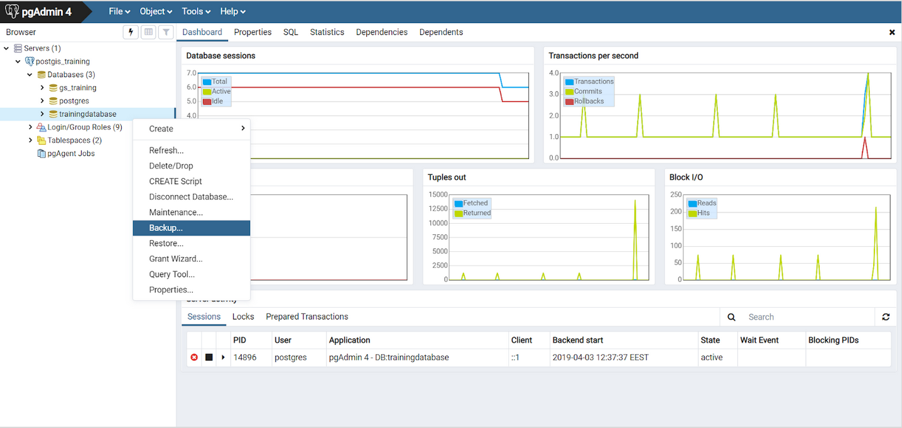
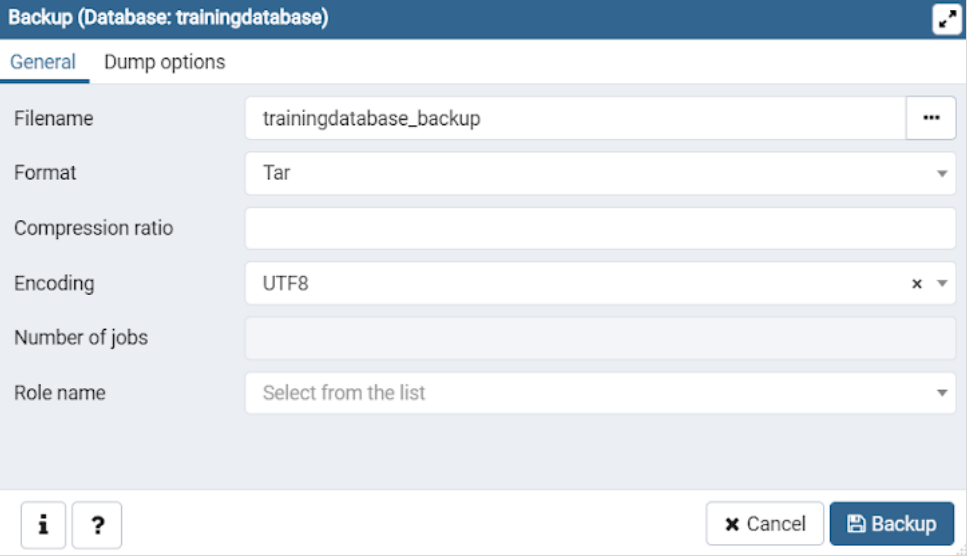
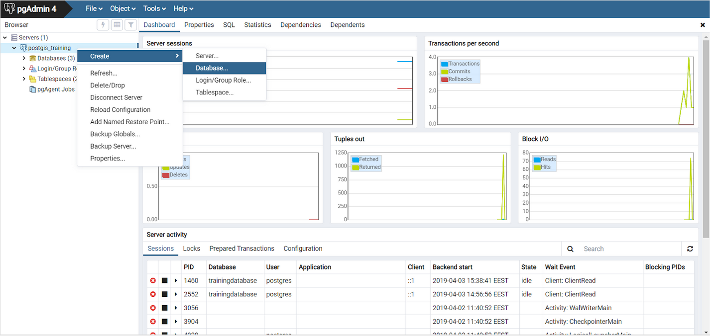
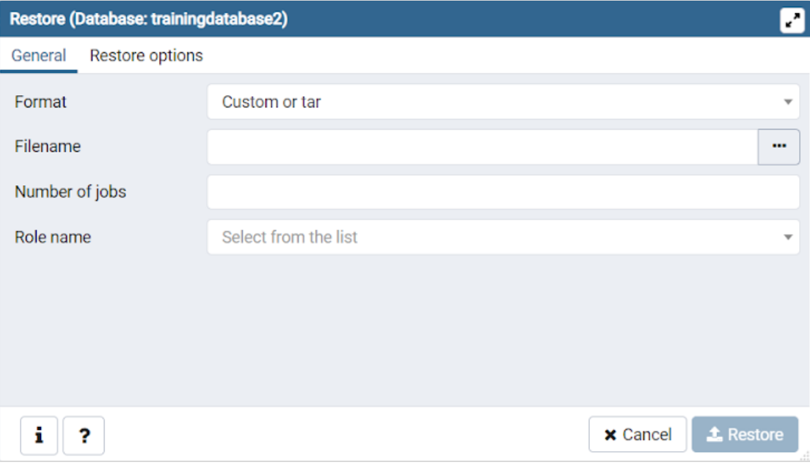
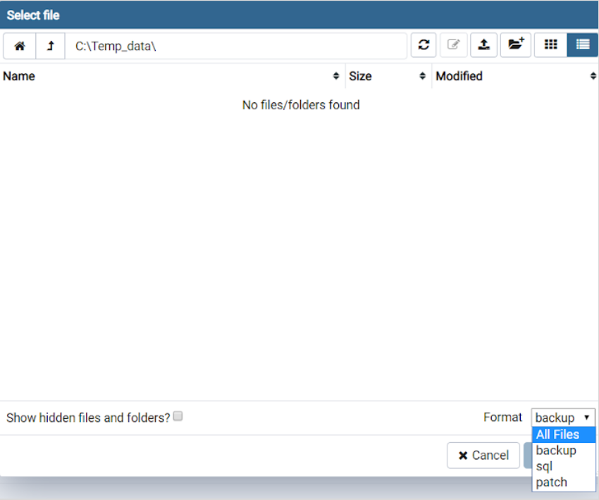

11 Harjoitus 10: Varmistus ja palautus
Harjoituksen sisältö - Tutustutaan tietokannan varmistamiseen ja palautukseen.
Harjoituksen tavoite - Opiskelija tietää kuinka tietokanta voidaan varmistaa ja palauttaa.
11.1 Harjoitus 10.1: Luodaan varmistus
Tehdään varmistus koulutuskannasta pgAdmin-työkalun avulla. Valitse harjoitustietokanta ja valitse hiiren oikealla painikkeella Backup…-toiminto:

Mikäli Backup-ikkuna ei avaudu vaan törmäät virheilmoitukseen, menettele seuraavasti: File > Preferences > vasemman reunan valikosta Paths alta Binary Paths ja kirjoita PostgreSQL Binary Path -kenttään /usr/bin
Täytä avautuvaan Backup-ikkunaan tiedoston nimeksi “trainingdatabase_backup”, formaatiksi Tar ja koodaukseksi UTF8.

11.2 Harjoitus 10.2: Tehdään palautus
11.2.1 Luo uusi tietokanta
Klikkaa hiiren oikeaa nappia tietokantaklusterin päällä ja valitse Create > Database…. Anna tietokannalle nimeksi “trainingdatabase2”.

11.2.2 Palauta varmistustiedostosta tiedot
Palautetaan siihen varmistukset klikkaamalla hiiren oikeaa painiketta juuri luodun trainingdatabase2-tietokannan päällä. Valitse Restore… > Filename > … ja hae äsken tallentamasi .tar-tiedosto koulutustietokoneesta.

Jos varmistustiedostoa ei meinaa löytyä, valitse Select file -ikkunan oikean alanurkan Format-alasvetovalikosta formaatiksi All Files. Voit tarkastella palautettavia kohteita ennen palautusta Display Objects -toiminnon avulla.

Kuinka kopioit harjoitustietokannan rakenteen (skeeman) toiseen tietokantaan?